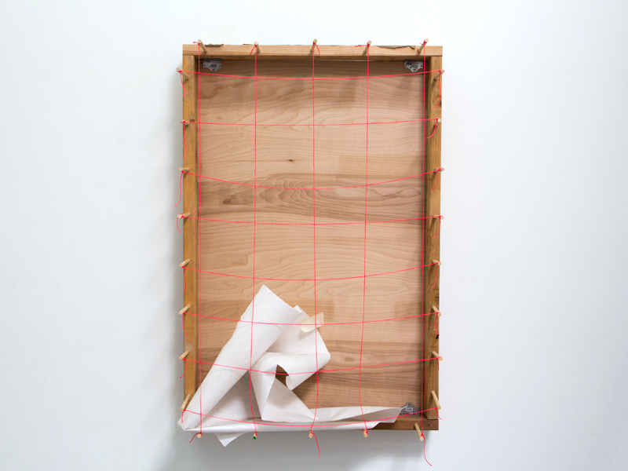

<section class="paintingWork-Sections m-scene"><div class="flex flex--center scene_element scene_element--fadein"><div class="col-1b"><h4>Painting</h4><a href="sWork-Intertextyouability.html" class="wp-nextBtn">></a></div><div class="col-1c"><h2>Fall To Dust II</h2><p class="workDate smaller">2016</p></div><div class="col-description"><p class="smaller">38" x 48" x 12"</p><p class="smaller">Butcher Paper, Dust From Sifted Studio Detritus, Gravity,<br/>Pink Nylon String, Tape, Weight, Wood From Past Projects</p><a href="pWork-Disclosures3.html" class="portfolio-prevBtn"><</a><a href="pWork-FallToDustI.html" class="portfolio-nextBtn">></a></div><div id="center" class="paintingGallery pushUp"><ul class="rslides"><li></li></ul></div></div></section>